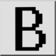
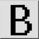
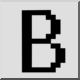
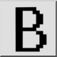

Bitmap export...
Werkbalk / icoon:
 

Menu: Bestand > Bitmap export...
Sneltoets: X, B
Opdrachten: bitmapexport
Dit is een automatische vertaling.
Werkbalk / icoon:
 

Menu: Bestand > Bitmap export...
Sneltoets: X, B
Opdrachten: bitmapexport
Deze functie exporteert de huidige tekening als bitmap bestand.
Er verschijnt een dialoogvenster voor het selecteren van het uitvoerbestand.
Nadat de bestandsnaam is opgegeven, wordt in een tweede dialoog gevraagd naar
de bitmapgrootte en de gewenste achtergrondkleur.
Merk op dat het exporteren naar bitmaps met een zeer groot formaat een
lange tijd kan duren, afhankelijk van uw hardware. De maximale grootte voor
bitmaps is breedte x hoogte ≤ 2'147'483'647.